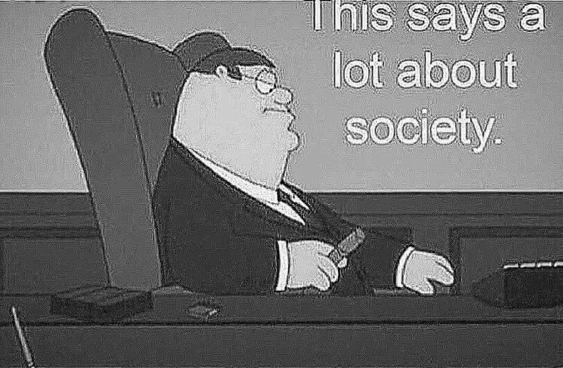

Roboter sind für die Mehrheit der Menschen eine Erweiterung von sich selbst. Das bedeutet ,dass sie sich nicht wirklich vorstellen können, dass ein Roboter besser als sie selbst sein kann. Der Mangel an Kreativität und die von Angst geprägte Voreingenommenheit setzen Scheuklappen auf die Aussichten einer Person und beschränken die Fähigkeit, über vorgefasste Meinungen hinauszusehen.
Als Menschen werden wir Robotern unser Vertrauen schenken.
Sie bringen in einer Welt voller Unsicherheit Objektivität mit, wegen ihres Determinismus
Und eines Tages wird das passieren:
Jugendlicher, der nun 18 geworden ist: "Hi, ich weiß nicht, für wen ich wählen sollte, kannst du mir jemanden vorschalgen?"
KI der Zukunft: "Ja klar! Seitdem du das Kommunistiche Manifest gelesen und dich als Sozialist beschreiben hast, solltest du in Betracht ziehen, [Name eines Politikers] zu wählen."
Oder, in dem schlimmste Fall:
KI der Zukunft: "Wähle [Name eines Politikers]."
18-jähriger: "Wie Rechtfertige ich es gegenüber meiner Familie und meinen Freunde?"
